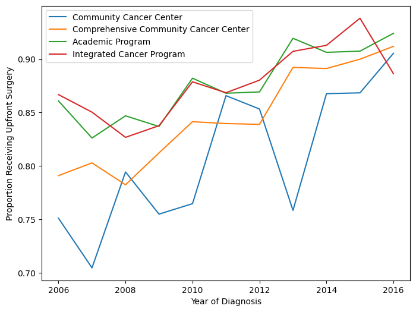
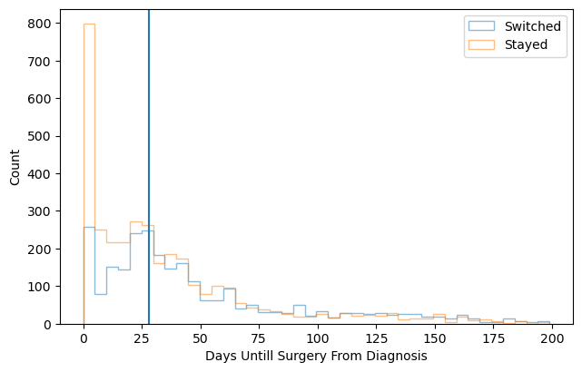

Code
library(tidyverse)
library(haven)
library(lmtest)
library(glmnet)
library(nnet)
library(reticulate)
library(broom)
library(rmarkdown)
library(knitr)
use_condaenv("website_env", required = TRUE)
knitr::opts_chunk$set(python.reticulate = FALSE)This project demonstrates code used in the data cleaning, analysis, and generation of figures in my verfy first publication “Trends and Factors Associated with Receipt of Upfront Surgery for Stage II-III Rectal Adenocarcinoma in the United States”. Here’s a link to the abstract. This blog was created with Quarto in R Studio, so to include Python versions of analysis and graphics I needed to specify an Anaconda environment in the setup chunk.
library(tidyverse)
library(haven)
library(lmtest)
library(glmnet)
library(nnet)
library(reticulate)
library(broom)
library(rmarkdown)
library(knitr)
use_condaenv("website_env", required = TRUE)
knitr::opts_chunk$set(python.reticulate = FALSE)The original paper uses data from the National Cancer Data Base. This data is not public thus I created a synthetic data set that attempts to recreate the characteristics of the original data but with much greater anonymization.
First step was to clean and engineer variables as in the original paper. The source file is retained on a secure server and these code chunks were only ran once (eval=FALSE)
# We will use synthpop to generate a synthetic data set
library(synthpop)
# Reading in original data from the NCDB
RectalData <- read_dta("ncdb_project_data.dta")
df1 <- RectalData %>%
select(RX_SUMM_SYSTEMIC_SUR_SEQ, RX_SUMM_RADIATION, RX_SUMM_SURGRAD_SEQ, RX_SUMM_CHEMO,
SEX, MED_INC_QUAR_12, AGE, raceb, TNM_CLIN_STAGE_GROUP, TNM_PATH_STAGE_GROUP,
SEQUENCE_NUMBER, HISTOLOGY, RX_SUMM_SURG_PRIM_SITE, YEAR_OF_DIAGNOSIS, FACILITY_TYPE_CD,
INSURANCE_STATUS, CDCC_TOTAL_BEST, DX_DEFSURG_STARTED_DAYS, CLASS_OF_CASE)
# Remove unknown sequences, treatments, and keep proper hist codes & primary
# surgery
df1 <- df1 %>%
filter(!RX_SUMM_SYSTEMIC_SUR_SEQ %in% c(6, 7, 9), !RX_SUMM_RADIATION == 9, !RX_SUMM_SURGRAD_SEQ %in%
c(6, 9), !RX_SUMM_CHEMO %in% c(99, 88), SEQUENCE_NUMBER %in% c("00", "01"),
HISTOLOGY %in% c(8140, 8210, 8260, 8261, 8262, 8263, 8470, 8480, 8481), RX_SUMM_SURG_PRIM_SITE %in%
c(30, 40, 50, 60, 70, 80))
# Make a simple stage variable and filter to only stage 2 and 3
df1 <- df1 %>%
mutate(TNM_CLIN_STAGE_GROUP, stage3 = ifelse(str_detect(TNM_CLIN_STAGE_GROUP,
"2"), "2", "0"))
df1$stage3[str_detect(df1$TNM_CLIN_STAGE_GROUP, "3") == TRUE] <- "3"
df1 <- df1[!(df1$stage3 == "0"), ]
# Define neoadjuvant, rad or chemo before surgery
df1 <- df1 %>%
mutate(neoadjuvant = 3)
df1 <- df1 %>%
mutate(neoadjuvant = case_when(RX_SUMM_SURGRAD_SEQ %in% c(2, 4) ~ 1, RX_SUMM_SYSTEMIC_SUR_SEQ %in%
c(2, 4) ~ 1, RX_SUMM_RADIATION == 0 & RX_SUMM_CHEMO %in% c(0, 82, 85, 86,
87) ~ 0, RX_SUMM_SURGRAD_SEQ == 3 & RX_SUMM_CHEMO %in% c(0, 82, 85, 86, 87) ~
0, RX_SUMM_SYSTEMIC_SUR_SEQ == 3 & df1$RX_SUMM_RADIATION == 0 ~ 0, RX_SUMM_SURGRAD_SEQ ==
3 & RX_SUMM_SYSTEMIC_SUR_SEQ == 3 ~ 0)) %>%
filter(neoadjuvant != 3)
# age group under 45, 45-65, 65 and up AGE
df1 <- df1 %>%
mutate(agegroup = case_when(AGE <= 45 ~ 0, AGE > 45 & AGE < 65 ~ 1, AGE >= 65 ~
2))
# create a var for switching facility and add the unknown gov insurance to
# unknown insurance
df1 <- df1 %>%
mutate(CLASS_OF_CASE, treatnotatdiag = ifelse(CLASS_OF_CASE %in% c(0, 20, 21,
22), "Switched", "Stayed"), INSURANCE_STATUS = ifelse(INSURANCE_STATUS ==
4, 9, INSURANCE_STATUS))
# Omit NA, this project used complete case analysis
df1 <- na.omit(df1)
# Keep only relevant variables
df1 <- df1 %>%
select(SEX, MED_INC_QUAR_12, agegroup, raceb, stage3, neoadjuvant, treatnotatdiag,
YEAR_OF_DIAGNOSIS, FACILITY_TYPE_CD, INSURANCE_STATUS, CDCC_TOTAL_BEST, DX_DEFSURG_STARTED_DAYS)
# Make variables into factors
df2 <- mutate(across(!DX_DEFSURG_STARTED_DAYS, as.factor))I now use the package synthpop to create a synthetic data set using bootstrapping and classification and regression trees. I utilized stratification and changed the order of variables used in the synthesis process to create a data set with lower mean square error. Finally I remove all rows that happen to be identical to rows in the original data to ensure every row is synthetic.
# Make synthetic data using CART and bootstrapping
# Reorder for synthetic data generation
df3 <- df2 %>%
dplyr::relocate(raceb, MED_INC_QUAR_12, neoadjuvant)
# Strat by race and ethnicity and median income for best overlap
synth_1 <- syn.strata(df3, proper = TRUE, strata = df2$raceb)
synth_2 <- syn.strata(df3, proper = TRUE, strata = df3$MED_INC_QUAR_12)
synth_dat1 <- synth_1$syn
synth_dat2 <- synth_2$syn
vars_i_want <- colnames(df2)
vars_i_want <- vars_i_want[!vars_i_want == "DX_DEFSURG_STARTED_DAYS"]
# Check Heat maps to compare pMSE
synthpop::utility.tables(synth_dat1, df3, tables = "twoway", vars = vars_i_want)
synthpop::utility.tables(synth_dat2, df3, tables = "twoway", vars = vars_i_want)
# Remove Replicates & tag for synthetic
final_synth_data <- sdc(synth_2, df3, label = "synthetic", rm.replicated.uniques = TRUE)
f <- final_synth_data$syn
write_tsv(f, "synthetic_NCDB_data.tsv")Here I perform logistic regression using the same variables as the original paper. For fun I put in code for both R and Python. The odds being calculated here are for receipt of neoadjuvant therapy, so the ORs are reversed in comparison to the original paper.
# Load synthetic data
synthetic_NCDB_data <- read_delim("synthetic_NCDB_data.tsv", delim = "\t", escape_double = FALSE,
trim_ws = TRUE)
synthetic_NCDB_data <- synthetic_NCDB_data %>%
mutate(across(!DX_DEFSURG_STARTED_DAYS, as.factor))
# logistic regression
log_fit <- glm(neoadjuvant ~ YEAR_OF_DIAGNOSIS + MED_INC_QUAR_12 + INSURANCE_STATUS +
raceb + CDCC_TOTAL_BEST + SEX + agegroup + stage3 + FACILITY_TYPE_CD + treatnotatdiag,
data = synthetic_NCDB_data, family = binomial(link = logit))
# Tidy results
tidy_log_fit <- data.frame(summary(log_fit)$coefficients)
rmarkdown::paged_table(round(tidy_log_fit %>%
mutate(OR = exp(Estimate)) %>%
arrange(Pr...z..), 3))import numpy as np
import pandas as pd
import matplotlib.pyplot as plt
import statsmodels.formula.api as smf
synthetic_NCDB_data_py = pd.read_csv("synthetic_NCDB_data.tsv", sep = '\t')
# Logistic Regression for odds of upfront surgery
model = smf.logit(formula="neoadjuvant~ C(YEAR_OF_DIAGNOSIS) + C(stage3) + C(MED_INC_QUAR_12) + C(INSURANCE_STATUS) + C(raceb) + C(CDCC_TOTAL_BEST) + C(SEX) + C(agegroup) + C(FACILITY_TYPE_CD) + C(treatnotatdiag)",data = synthetic_NCDB_data_py).fit()
mod_summary = model.summary()
mod_summary_table = pd.read_html(mod_summary.tables[1].as_html(), header=0, index_col=0)[0]
print(mod_summary_table)Optimization terminated successfully.
Current function value: 0.379420
Iterations 6
coef std err z P>|z| [0.025 0.975]
Intercept 1.4275 0.116 12.353 0.000 1.201 1.654
C(YEAR_OF_DIAGNOSIS)[T.2007] -0.1400 0.070 -1.992 0.046 -0.278 -0.002
C(YEAR_OF_DIAGNOSIS)[T.2008] -0.0996 0.068 -1.459 0.145 -0.233 0.034
C(YEAR_OF_DIAGNOSIS)[T.2009] -0.0424 0.068 -0.627 0.531 -0.175 0.090
C(YEAR_OF_DIAGNOSIS)[T.2010] 0.1894 0.069 2.747 0.006 0.054 0.325
C(YEAR_OF_DIAGNOSIS)[T.2011] 0.1960 0.068 2.871 0.004 0.062 0.330
C(YEAR_OF_DIAGNOSIS)[T.2012] 0.1808 0.068 2.660 0.008 0.048 0.314
C(YEAR_OF_DIAGNOSIS)[T.2013] 0.5288 0.071 7.501 0.000 0.391 0.667
C(YEAR_OF_DIAGNOSIS)[T.2014] 0.5490 0.070 7.843 0.000 0.412 0.686
C(YEAR_OF_DIAGNOSIS)[T.2015] 0.6183 0.072 8.637 0.000 0.478 0.759
C(YEAR_OF_DIAGNOSIS)[T.2016] 0.6817 0.073 9.325 0.000 0.538 0.825
C(stage3)[T.3] 0.3496 0.028 12.359 0.000 0.294 0.405
C(MED_INC_QUAR_12)[T.2] 0.0421 0.044 0.954 0.340 -0.044 0.129
C(MED_INC_QUAR_12)[T.3] 0.0099 0.044 0.228 0.820 -0.075 0.095
C(MED_INC_QUAR_12)[T.4] 0.0199 0.043 0.460 0.646 -0.065 0.105
C(INSURANCE_STATUS)[T.1] -0.0009 0.072 -0.013 0.990 -0.142 0.140
C(INSURANCE_STATUS)[T.2] -0.0702 0.087 -0.804 0.422 -0.242 0.101
C(INSURANCE_STATUS)[T.3] -0.1189 0.079 -1.498 0.134 -0.275 0.037
C(INSURANCE_STATUS)[T.9] -0.0509 0.111 -0.460 0.645 -0.268 0.166
C(raceb)[T.2] 0.0297 0.052 0.568 0.570 -0.073 0.132
C(raceb)[T.3] -0.1414 0.071 -1.993 0.046 -0.280 -0.002
C(raceb)[T.4] -0.0020 0.132 -0.015 0.988 -0.260 0.256
C(CDCC_TOTAL_BEST)[T.1] -0.1870 0.035 -5.320 0.000 -0.256 -0.118
C(CDCC_TOTAL_BEST)[T.2] -0.1247 0.067 -1.871 0.061 -0.255 0.006
C(CDCC_TOTAL_BEST)[T.3] -0.2123 0.098 -2.155 0.031 -0.405 -0.019
C(SEX)[T.2] -0.2803 0.028 -9.893 0.000 -0.336 -0.225
C(agegroup)[T.1] -0.2044 0.064 -3.219 0.001 -0.329 -0.080
C(agegroup)[T.2] -0.5308 0.072 -7.399 0.000 -0.671 -0.390
C(FACILITY_TYPE_CD)[T.2] 0.2747 0.048 5.763 0.000 0.181 0.368
C(FACILITY_TYPE_CD)[T.3] 0.3958 0.050 7.912 0.000 0.298 0.494
C(FACILITY_TYPE_CD)[T.4] 0.5036 0.058 8.725 0.000 0.390 0.617
C(treatnotatdiag)[T.Switched] 0.4072 0.029 14.121 0.000 0.351 0.464This figure shows the proportion of patients receiving neoadjuvant treatment by facility type, and how this proportion has increased over time. There were a lot of issues with getting the Python figure to display correctly, so I had to do a little work around and save the figure before knitting the markdown document. Apologies for the colors not matching in the R and Python versions. There’s only so much time in the world…
# Making df of just people who got upfront surg
synthetic_NCDB_data2 <- synthetic_NCDB_data %>%
mutate(neoadjuvant = as.numeric(neoadjuvant) - 1)
df2 <- synthetic_NCDB_data2 %>%
filter(neoadjuvant == 0)
# renaming the fac type
dfyear <- synthetic_NCDB_data2 %>%
dplyr::select(YEAR_OF_DIAGNOSIS, neoadjuvant, FACILITY_TYPE_CD)
dfyear$Facility_Type[dfyear$FACILITY_TYPE_CD == 1] <- "Community Cancer Program"
dfyear$Facility_Type[dfyear$FACILITY_TYPE_CD == 2] <- "Comprehensive CC Program"
dfyear$Facility_Type[dfyear$FACILITY_TYPE_CD == 3] <- "Academic Program"
dfyear$Facility_Type[dfyear$FACILITY_TYPE_CD == 4] <- "Integrated Network Cancer Program"
# finding proportion of upfront surg by fac type
dfyear <- dfyear %>%
dplyr::group_by(YEAR_OF_DIAGNOSIS, Facility_Type) %>%
dplyr::summarize(ratio = mean(neoadjuvant))
# finding overall median per year of upfront surg
dfyearavg <- synthetic_NCDB_data2 %>%
dplyr::group_by(YEAR_OF_DIAGNOSIS) %>%
dplyr::summarize(ratio = mean(neoadjuvant))
dfyearavg$Facility_Type <- "Overall Median"
dfyearavg <- dfyearavg %>%
select(YEAR_OF_DIAGNOSIS, Facility_Type, ratio)
# Merging overall and by facility type
year1 <- as.data.frame(dfyear)
year2 <- as.data.frame(dfyearavg)
mergedyearly <- rbind(year1, year2)
mergedyearly$Facility_Type <- factor(mergedyearly$Facility_Type, levels = c("Integrated Network Cancer Program",
"Academic Program", "Overall Median", "Comprehensive CC Program", "Community Cancer Program"))
# plotting upfron surg by fac type
ggplot(mergedyearly) + geom_line(data = mergedyearly, aes(x = YEAR_OF_DIAGNOSIS,
y = ratio, group = Facility_Type, color = Facility_Type), size = 1.3) + labs(x = "Year of Diagnosis",
y = "Proportion Receiving Upfront Surgery", color = "Facility Type") + theme_test() +
scale_color_brewer(palette = "Dark2")
# Graphing proportion receiving upfront surg at different facility types over time
rcParams['figure.figsize'] = 8,6
dfCC = synthetic_NCDB_data_py.query('FACILITY_TYPE_CD==1').filter(['YEAR_OF_DIAGNOSIS','neoadjuvant']).groupby(['YEAR_OF_DIAGNOSIS']).agg(['mean'])
dfCCC = synthetic_NCDB_data_py.query('FACILITY_TYPE_CD==2').filter(['YEAR_OF_DIAGNOSIS','neoadjuvant']).groupby(['YEAR_OF_DIAGNOSIS']).agg(['mean'])
dfA = synthetic_NCDB_data_py.query('FACILITY_TYPE_CD==3').filter(['YEAR_OF_DIAGNOSIS','neoadjuvant']).groupby(['YEAR_OF_DIAGNOSIS']).agg(['mean'])
dfIN = synthetic_NCDB_data_py.query('FACILITY_TYPE_CD==4').filter(['YEAR_OF_DIAGNOSIS','neoadjuvant']).groupby(['YEAR_OF_DIAGNOSIS']).agg(['mean'])
plt.figure(figsize = (8,6))
plt.plot(dfCC, label="Community Cancer Center")
plt.plot(dfCCC, label="Comprehensive Community Cancer Center")
plt.plot(dfA, label="Academic Program")
plt.plot(dfIN, label="Integrated Cancer Program")
plt.legend()
plt.xlabel("Year of Diagnosis")
plt.ylabel("Proportion Receiving Upfront Surgery")
plt.savefig('posts/first_project/overtime.png',bbox_inches='tight')
This final figure displays how the counts of patients by how many days they have to wait till surgery, colored by whether they switched facilities or not.
# making three groups for a surgery delay
df2$surggroup[df2$DX_DEFSURG_STARTED_DAYS == 0] <- "Day zero"
df2$surggroup[df2$DX_DEFSURG_STARTED_DAYS > 0 & df2$DX_DEFSURG_STARTED_DAYS < 28] <- "Short delay"
df2$surggroup[df2$DX_DEFSURG_STARTED_DAYS >= 28] <- "Long Delay"
df2$surggroup <- factor(df2$surggroup)
# plotting surg delay and switching facility
ggplot(df2, aes(x = DX_DEFSURG_STARTED_DAYS, fill = treatnotatdiag)) + geom_histogram(binwidth = 5) +
xlim(-10, 200) + labs(x = "Days Untill Surgery From Diagnosis", y = "Count",
fill = "Facility Switch") + theme_test() + scale_fill_brewer(palette = "Set2") +
geom_vline(xintercept = 28)
#Data frame that only includes people who got upfront surg
dfsurg = synthetic_NCDB_data_py.query('neoadjuvant == 0')
# Plotting surgery delay and switching facility
dfsurggraph = dfsurg.filter(['treatnotatdiag','DX_DEFSURG_STARTED_DAYS']).query('DX_DEFSURG_STARTED_DAYS<200')
dfsurggraphswitch = dfsurggraph.query('treatnotatdiag == "Switched"')
dfsurggraphstay = dfsurggraph.query('treatnotatdiag == "Stayed"')
plt.clf()
plt.hist(dfsurggraphswitch['DX_DEFSURG_STARTED_DAYS'], bins=40, fill=False,histtype='step',stacked=True,label="Switched",alpha=0.5)
plt.hist(dfsurggraphstay['DX_DEFSURG_STARTED_DAYS'], bins=40,fill=False,histtype='step',stacked=True,label="Stayed",alpha=0.5)
plt.xlabel("Days Untill Surgery From Diagnosis")
plt.ylabel("Count")
plt.legend()
plt.axvline(x=28)
plt.savefig('posts/first_project/switchvstay.png',bbox_inches='tight')
plt.show()